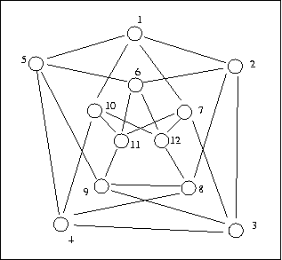
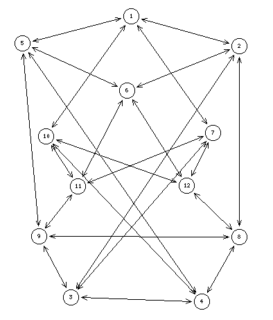
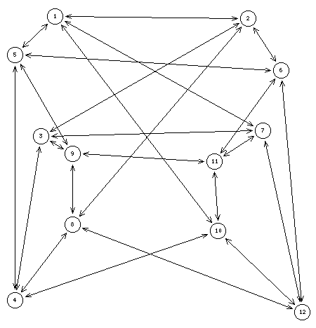
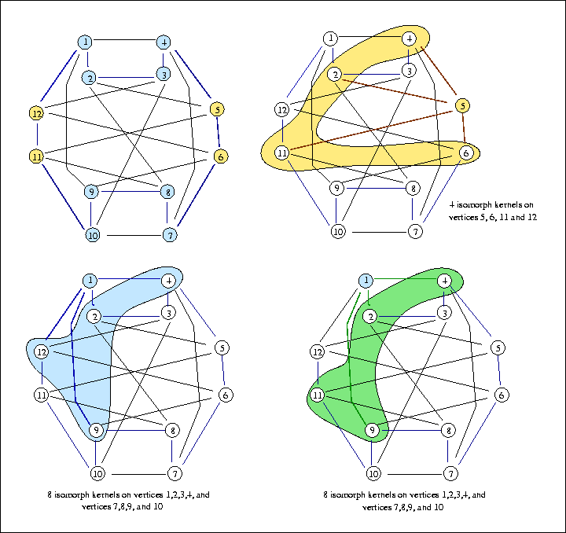
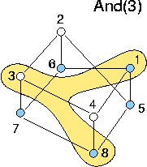

Crisp symmetric simple graphs
Symmetric graphs, graph automorphism, unlabelled kernels, St-Nicolas graphs
Grünbaum conjectured that for every m>1, n>2, there exists an m-regular, m-chromatic graph of girth at least n. This result is trivial for n=2 and m=2,3, but only two other such graphs are known: the Chvátal graph illustrated below, and the Grünbaum graph.
The Chvátal graph is a quartic Hamiltonian graph on 12 nodes and 24 edges. It has chromatic number 4, and girth 4 and unlabelled kernel number 3.
Indeed, Chvátal's graph supports an automorphisms group with two generating reflections, shown below, delivering two orbits of isomorphic labelled graphs.
 The autumorhism group delivers3 kernel orbits of respectively 2 x 8 and 4 isomorph labelled kernels.
It is worthwhile noticing that the Chvátal graph contains a St-Nicolas subgraph of order 8, induced by the two exterior rectangles: vertices 1,2,3,4, and vertices 7,8,9,10. More precisely, this St-Nicolas graph is in fact the Andrásfai graph of order 3, i.e. the Möbius ladder of order 4.
The only known St-Nicolas graphs of order 12 are the clique K12 and the circulant graph {Z_12, [1,4,6]}.